UniSpeech Demo Samples (will be renamed to UniTTS.)
Authors
Anonymous authors (in review)
Abstract
We propose a novel high-fidelity expressive speech synthesis model, UniSpeech, that learns and controls multiple non-hierarchically correlated attributes without conflict.
UniSpeech represents phonemes and non-linguistic attributes in a single unified embedding space.
The proposed method is particularly effective in reflecting both speaker ID and emotion because it does not add the variance by the two overlapping attributes redundantly, and predicts prosodic attributes based on the speaker and emotion IDs.
UniTTS learns the unified embedding space leveraging a residual network that extends FastSpeech2.
We additionally applied a data augmentation technique to improve the fidelity and controllability over the non-linguistic attributes.
In experiments, the visualization results exhibited that UniTTS successfully learned multiple attributes in the unified embedding space.
As well, UniSpeech synthesized high-fidelity speech signals while controlling multiple attributes, and transferred speech style from the reference speech.
Speaker Modeling
These audio samples demonstrate the speaker modeling performance of UniSpeech.
Please compare the audio samples focusing on the similarity in speaker characteristics between the ground-truth and the synthesized samples.
- Column 1: the ground-truth samples.
- Column 2~4: audio samples demonstrating UniSpeech's speaker(or emotion) modeling performance with other expressive TTS models
: Column 2: FastSpeech2 extended by applying GST for extracting style embedding from the reference sample (for comparison)
: Column 3: UniSpeech using separate embeddings for speaker ID and emotion (for comparison)
: Column 4: UniSpeech using unified embedding (proposed)
- Columns 5~7: audio samples demonstrating the effects of the techniques used in UniSpeech
: Column 5: UniSpeech not applying data augmentation
: Column 6: UniSpeech not applying grapheme-level local prosody modeling
: Column 7: UniSpeech not applying grapheme-level local prosody modeling and data augmentation.
GT
GST FastSpeech2 (reference encoder)
UniSpeech - separate embeddings for speaker ID and emotion
UniSpeech - unified embedding (proposed)
UniSpeech - data aug.
UniSpeech - local prosody
UniSpeech - local prosody - data aug.
Emotion Modeling
These audio samples demonstrate the speaker modeling performance of UniSpeech. Please compare the audio samples focusing on the similarity in emotion between the ground-truth and the synthesized samples.
- Column 1: the ground-truth samples.
- Column 2~4: audio samples demonstrating UniSpeech's speaker(or emotion) modeling performance with other expressive TTS models
: Column 2: FastSpeech2 extended by applying GST for extracting style embedding from the reference sample (for comparison)
: Column 3: UniSpeech using separate embeddings for speaker ID and emotion (for comparison)
: Column 4: UniSpeech using unified embedding (proposed)
- Columns 5~7: audio samples demonstrating the effects of the techniques used in UniSpeech
: Column 5: UniSpeech not applying data augmentation
: Column 6: UniSpeech not applying grapheme-level local prosody modeling
: Column 7: UniSpeech not applying grapheme-level local prosody modeling and data augmentation.
GT
GST FastSpeech2 (reference encoder)
UniSpeech - separate embeddings for speaker ID and emotion
UniSpeech - unified embedding (proposed)
UniSpeech - data aug.
UniSpeech - local prosody
UniSpeech - local prosody - data aug.
Speaker and emotion modeling
These audio samples demonstrate the speaker and emotion modeling performance of UniSpeech.
neutral
happy
sad
angry
nen speaker mel
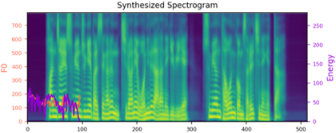
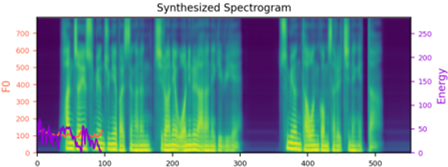
nen speaker wav
neo speaker mel
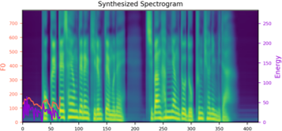
neo speaker wav
ned speaker mel
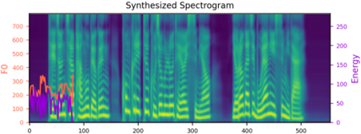
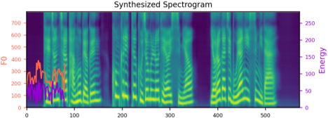
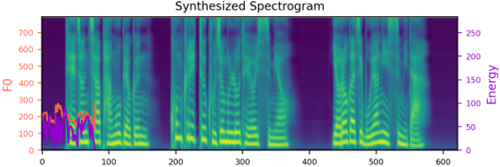
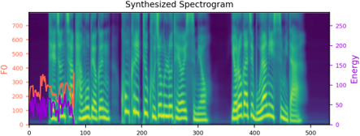
ned speaker wav
nec speaker mel
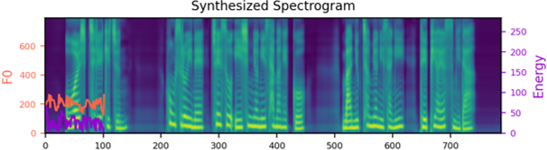
nec speaker wav
Effect of Data augmentation
Energy control
The following samples were synthesized by UniSpeech with increased or decreased energy values.
- Row 1: the ground truth samples and augmented samples whose energy values were increased or decreased using the SOX toolkit.
- Row 2: the audio samples synthesized by UniSpeech applying data augmentation
- Row 3: the audio samples synthesized by UniSpeech not applying data augmentation
Without data augmentation, UniSpeech produced speech samples with deteriorated quality when the energy value was increased or decreased. Particularly, when the energy value was decreased, it produced severly broken and distorted samples.
However, when applying data augmentation, it produced clean samples even with increased or decreased energy values.
increased energy values
0
decreased energy values
GT mel
GT wavs
w/ data aug. mel
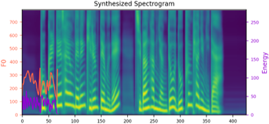
w/ data aug. wavs
w/o data aug. mel
w/o data aug. wavs
Pitch control
The following samples were synthesized by UniSpeech with increased or decreased pitch values.
Please note that adjusting the pitch of the voice using the SOX toolkit has a side-effect that changes the timbre as shown in the first row.
- Row 1: the ground truth samples and augmented samples whose pitch values were increased or decreased using the SOX toolkit.
- Row 2: the audio samples synthesized by UniSpeech applying data augmentation
- Row 3: the audio samples synthesized by UniSpeech not applying data augmentation
Without data augmentation, UniSpeech shows limited ability to control pitch, as shown more clearly in the spectrograms.
When applying data augmentation, it controlled pitch more effectively but changed timbre, because it was trained with the augmented samples whose timbre was changed due to the side-effect of the SOX toolkit.
We ask the listener to compare the samples focusing on the ability to control pitch.
increased pitch values
0
decreased pitch values
GT mel
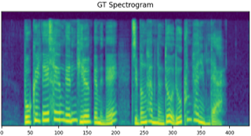
GT wavs
w/ data aug. mel
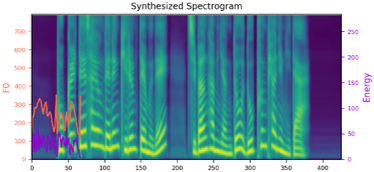
w/ data aug. wavs
w/o data aug. mel
w/o data aug. wavs
Pitch and energy control
The following samples were synthesized by UniSpeech controling both pitch and energy.
Applying data augmenation, UniSpeech can effectively control pitch and energy.
0
pitch +, energy +
pitch +, energy -
pitch -, energy +
pitch -, energy -
GT mel
GT wavs
w/ data aug. mel
w/ data aug. wavs
w/o data aug. mel
w/o data aug. wavs
Style Mixing
Speaker identity transfer
The first two columns show the synthesized samples with different speaker and emotion IDs.
We extracted the speaker embedding used to synthesize the first samples and other propody embeddings used to synthesize the second samples.
Then, we combined the embeddings to synthesize the third samples.
The third samples have the timbre of the first samples and the style of the second samples.
The sources of speaker embedding
The sources of other style embeddings
The samples synthesized with the combined style embedding
emh speaker + emg(angry)'s prosody mel
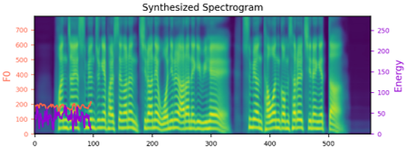
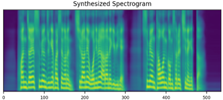
emh speaker + emg(angry)'s prosody wav
emh speaker + emb(happy)'s prosody mel
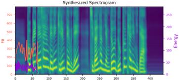
emh speaker + emb(happy)'s prosody wav
emb speaker + emg(angry)'s prosody mel
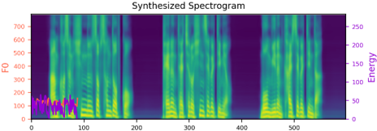
emb speaker + emg(angry)'s prosody wav
emb speaker + ema(sad)'s prosody mel
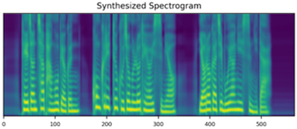
emb speaker + ema(sad)'s prosody wav
Emotion representation transfer
The first two columns show the synthesized samples with different speaker and emotion IDs.
We extracted the emotion embedding used to synthesize the first samples and other propody embeddings used to synthesize the second samples.
Then, we combined the embeddings to synthesize the third samples.
The third samples have the emotion of the first samples and the style of the second samples.
The sources of emotion embedding
The sources of other style embeddings
The samples synthesized with the combined style embedding
emb's neutral emotion + emb(sad)'s other prosodies mel
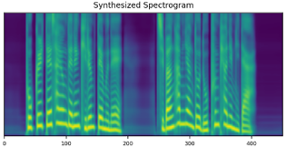
emb's neutral emotion + emb(sad)'s other prosodies wav
emh's happy emotion + emh(angry)'s other prosodies mel
emh's happy emotion + emh(angry)'s other prosodies wav
emg's sad emotion + emg(happy)'s other prosodies mel
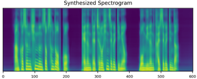
emg's sad emotion + emg(happy)'s other prosodies wav
emb's angry emotion + emb(happy)'s other prosodies mel
emb's angry emotion + emb(happy)'s other prosodies wav
Transfer of emotion, duration, pitch and energy from ETOD samples to KSS speaker
The KSS dataset contains 12,853 speech samples WITHOUT emotion label spoken by a SINGLE female speaker. (Please note that no emotion label exists in KSS dataset)
The ETOD dataset contains 6,000 samples with 4 emotion types spoken by 15 speakers.
We transferred the style of the samples in the ETOD dataset to the KSS speaker.
We extracted the speaker embedding from the KSS samples, that do not have emotion labels, and the other style embeddings from the samples of the ETOD dataset.
Then, we synthesized speech using the combined style embedding.
The first and second columns show the samples of the KSS dataset and the ETOD dataset, respectively.
The third column shows the syntesized samples using the combined style embeddings.
The sources of speaker embedding. (KSS dataset)
The sources of other style embeddings (ETOD dataset)
The samples synthesized with the combined style embedding
KSS + emh speaker(angry)'s prosodies mel
KSS + emh speaker(angry)'s prosodies wav
KSS + emg speaker(angry)'s prosodies mel
KSS + emg speaker(angry)'s prosodies wav
KSS + emb speaker(neutral)'s prosodies mel
KSS + emb speaker(neutral)'s prosodies wav
KSS + ema speaker(sad)'s prosodies mel
KSS + ema speaker(sad)'s prosodies wav
Transfer of duration, pitch, and energy from ETOD samples to KES speaker
We transferred the duration, pitch, energy of the samples in the ETOD dataset to the KES speaker.
We extracted the speaker and emotion embeddings from the KES samples spoken by a single speaker and the duration, pitch, and energy embeddings from the samples in the ETOD dataset.
Then, we synthesized speech using the combined style embedding.
The first and second columns show the samples of the KES dataset and the ETOD dataset, respectively.
The third column shows the syntesized samples using the combined style embeddings.
The sources of speaker and emotion embeddings. (KES dataset)
The sources of other style embeddings (ETOD dataset)
The samples synthesized with the combined style embedding.